PS3 Programming Log
My working log for learning programming for the Playstation 3. Inspired by Newcastle University's Computer Game Engineering Content where they have a few sections on PS3 programming. Unfortunately, they seem to use the official SONY PS3 Devkit, which of course we don't have access too. There is however an open source ps3sdk we can use: https://github.com/ps3dev. I've followed so far the first introduction section from the Newcastle content and it seems like a good resource; the only drawback is it's Windows and Visual Studio oriented. (Another future project TODO - convert their example code to SDL/GLEW for Linux support!)
For PS3 my current goal is to get MD5 skeletal animation working from the NewCastle tutorial, and possibly the GLTF skeletal animation from Hands-On C++ Game Animation Programming. Also, it'd be cool to get RSXGL working, which is an OpenGL 3.1 implementation, but I haven't had any luck so far.
The source code is currently here: https://bitbucket.org/williamblair/ps3devprogs
05/15/2021
Looking through the psl1ght graphics example. Seems actually pretty similar to OpenGL: we have shaders, buffer attributes, texture formats, etc...
The shaders are NOT compiled and loaded at runtime like in OpenGL; instead they are pre-compiled at the same time as the main program and stored as byte arrays and included as C headers.
The shader language seems pretty similar to GLSL except programs take in a bunch of function arguments intead of global vars:
void main
(
float3 vertexPosition : POSITION,
float3 vertexNormal : NORMAL,
float2 vertexTexcoord : TEXCOORD0,
uniform float4x4 projMatrix,
uniform float4x4 modelViewMatrix,
out float4 ePosition : POSITION,
out float4 oPosition : TEXCOORD0,
out float3 oNormal : TEXCOORD1,
out float2 oTexcoord : TEXCOORD2
)
{
ePosition = mul(mul(projMatrix,modelViewMatrix),float4(vertexPosition,1.0f));
oPosition = float4(vertexPosition,1.0f);
oNormal = vertexNormal;
oTexcoord = vertexTexcoord;
}
Vertex buffer data seems to be stored on GPU memory but accessible from the CPU. The memory is allocated via rsxMemalign() and then vertex data is copied into it. There is an 'offset' associated with this allocation used as arguments to other functions; I'm assuming this is like the address of the memory block within GPU memory.
m_meshBuffer->vertices = (S3DVertex*)rsxMemalign(128,m_meshBuffer->cnt_vertices*sizeof(S3DVertex));
...
m_meshBuffer->vertices[i] = S3DVertex(pos.getX(),pos.getY(),pos.getZ(),normal.getX(),normal.getY(),normal.getZ(),tu,static_cast(ay*RECIPROCAL_PI));
u32 offset = 0;
rsxAddressToOffset( &m_meshBuffer->vertices[0].pos, &offset );
The S3DVertex and SBuffer classes are included with the psl1ght sample as custom objects (mesh.h), so we don't have to use those if we don't want to.
As a side note, the main CPU is the PowerPC Processor Unit (PPU) and then there are eight SPUs to execute separate programs to run in parallel if desired (see here). RSX stands for reality synthesizer and is the PS3 GPU (see here.)
The compiled program results in a .elf file (similar to the PS2), but for the PS3 this needs to be converted into a .self file which I think is an encrypted version of the .elf. Using ps3load with the elf file didn't seem to work but using the .self file did. Conversion to a .self is done automatically with the ps1light sample makefile.
I remorked the sample code to remove the lighting (to simplify things), then made the following C++ classes:
- Shader
- Texture
- Entity
- Sphere
- Torus
- Cube
Rendering an entity then works the same as opengl, where you set shader and vertex buffer attributes, then draw indexed arrays:
g_Shader.Use();
g_Shader.SetVertexProgParam( "projMatrix", (float*)&P );
g_Shader.SetVertexProgParam( "modelViewMatrix", (float*)&modelViewMatrix );
...
g_Sphere.Render();
TODO is to make a rendering class, also have a single shader SetAttribute function for both vertex shader and fragment shader attribs. I also made a Logging namespace and macro which logs to both TTY/stdout and the debug font sample to the screen:
#define DBG_LOG(format, ...) \
sprintf( Log::dbgPrintStr, "%s:%d: ", __FILE__, __LINE__ ); \
Log::len = strlen( Log::dbgPrintStr ); \
sprintf( &Log::dbgPrintStr[ Log::len ], format, ##__VA_ARGS__ ); \
\
printf( Log::dbgPrintStr ); \
\
Log::dbgLogHistory.push_back( Log::dbgPrintStr ); \
if ( Log::dbgLogHistory.size() > LOG_HISTORY_LEN ) { \
Log::dbgLogHistory.pop_front(); \
}
I originally tried an inline function but that resulted in the function not actually being able to be inlined, and thus the __FILE__ and __LINE__ preprocessor vars were not showing the desired call location, and instead were all showing the same line and function for inside the log call. So I used a macro instead. For the DBG_LOG macro, an important note is you need the two ## in front of __VA_ARGS__ in order to prevent errors when no extra args were provided to the macro. This might be gcc specific.
The result of this rework can be seen running in the rpcs3 emulator, though I've confirmed it runs on hardware too:
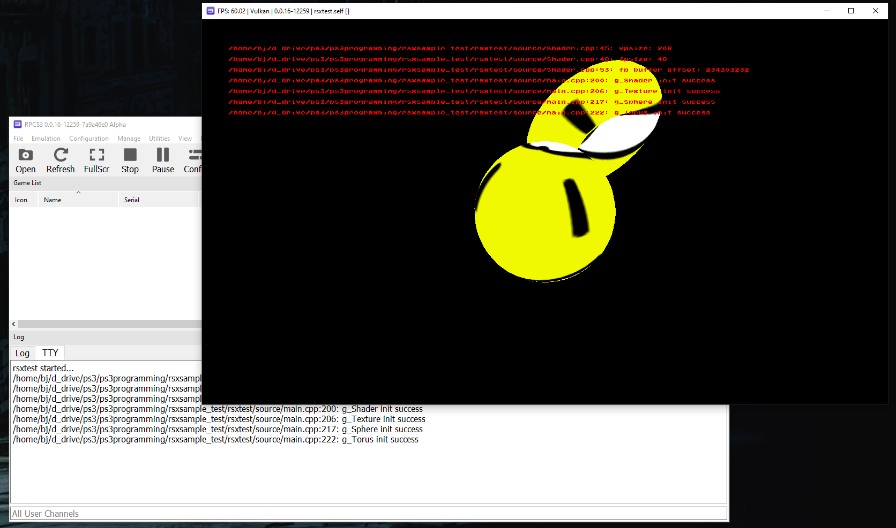05/22/2021
Added pad class for the controller. Basic psl1ght API usage for the pad is as follows:
ioPadInit(7); // Idk what 7 means, TODO - look this up
...
padInfo info;
padData data;
int padnumber = 0;
while (true)
{
ioPadGetInfo( &info );
if ( info.status[ padnumber ] )
{
ioPadGetData( padnumber, &data );
bool crossPressed = (bool)data.BTN_CROSS;
}
}
typedef struct _pad_data
{
s32 len;
union{
u16 button[MAX_PAD_CODES];
struct {
u16 zeroes;
unsigned int : 8;
unsigned int seven : 4;
unsigned int halflen : 4;
unsigned int : 8;
/* Button information */
/* 0: UP, 1: DOWN */
unsigned int BTN_LEFT : 1;
unsigned int BTN_DOWN : 1;
unsigned int BTN_RIGHT : 1;
unsigned int BTN_UP : 1;
unsigned int BTN_START : 1;
unsigned int BTN_R3 : 1;
unsigned int BTN_L3 : 1;
unsigned int BTN_SELECT : 1;
unsigned int : 8;
unsigned int BTN_SQUARE : 1;
unsigned int BTN_CROSS : 1;
unsigned int BTN_CIRCLE : 1;
unsigned int BTN_TRIANGLE : 1;
unsigned int BTN_R1 : 1;
unsigned int BTN_L1 : 1;
unsigned int BTN_R2 : 1;
unsigned int BTN_L2 : 1;
/* Analog nub information */
/* 0x0000 - 0x00FF */
unsigned int ANA_R_H : 16;
unsigned int ANA_R_V : 16;
unsigned int ANA_L_H : 16;
unsigned int ANA_L_V : 16;
/* Pressure-sensitive information */
/* 0x0000 - 0x00FF */
unsigned int PRE_RIGHT : 16;
unsigned int PRE_LEFT : 16;
unsigned int PRE_UP : 16;
unsigned int PRE_DOWN : 16;
unsigned int PRE_TRIANGLE : 16;
unsigned int PRE_CIRCLE : 16;
unsigned int PRE_CROSS : 16;
unsigned int PRE_SQUARE : 16;
unsigned int PRE_L1 : 16;
unsigned int PRE_R1 : 16;
unsigned int PRE_L2 : 16;
unsigned int PRE_R2 : 16;
/* Sensor information */
/* 0x0000 - 0x03FF */
unsigned int SENSOR_X : 16;
unsigned int SENSOR_Y : 16;
unsigned int SENSOR_Z : 16;
unsigned int SENSOR_G : 16;
/* BD remote information */
unsigned int BTN_BDLEN : 16;
unsigned int BTN_BDCODE : 16;
u8 reserved[76];
};
};
} padData;
Pad pad;
...
pad.Init( 0 ); // controller 0
..
while (true)
{
pad.Update();
if ( pad.IsHeld( Pad::CROSS ) ) {
goto done;
}
// large actuator
static unsigned short algVal;
algVal = pad.GetLeftAnalogY();
static unsigned short prevAlgVal = algVal;
if ( algVal != prevAlgVal )
{
if ( algVal > prevAlgVal && algVal - prevAlgVal > 5 )
{
pad.SetLargeActuator( algVal );
}
else if ( algVal < prevAlgVal && prevAlgVal - algVal > 5 )
{
pad.SetLargeActuator( algVal );
}
DBG_LOG( "Alg X: %u", algVal );
}
prevAlgVal = algVal;
// small actuator
if ( pad.IsClicked( Pad::SQUARE ) )
{
static bool actVal = false;
actVal = !actVal;
pad.SetSmallActuator( actVal );
}
...
}
Also created renderer class. Currently relies too heavily on rsxutil.h/cpp, so a TODO is inspect those internals. Basic usage is as follows:
Renderer renderer;
Entity entity;
renderer.Init();
while (1)
{
renderer.BeginFrame();
renderer.RenderEntity( entity );
renderer.EndFrame();
}
RenderEntity() actually forwards the important drawing to the Entity class; it sets render clip settings then just calls Entity::Render()
void Renderer::RenderEntity( Entity& entity )
{
rsxSetUserClipPlaneControl(context,GCM_USER_CLIP_PLANE_DISABLE,
GCM_USER_CLIP_PLANE_DISABLE,
GCM_USER_CLIP_PLANE_DISABLE,
GCM_USER_CLIP_PLANE_DISABLE,
GCM_USER_CLIP_PLANE_DISABLE,
GCM_USER_CLIP_PLANE_DISABLE);
entity.Render();
}
To actually draw triangles, the process is quite OpenGL like: you set vertex pointer attribs and then (in this case) draw indexed triangles (code from Entity.cpp):
rsxAddressToOffset( &m_meshBuffer->vertices[0].pos, &offset );
rsxBindVertexArrayAttrib( m_context,
GCM_VERTEX_ATTRIB_POS,
0,
offset,
sizeof( S3DVertex ),
3,
GCM_VERTEX_DATA_TYPE_F32,
GCM_LOCATION_RSX );
rsxAddressToOffset( &m_meshBuffer->vertices[0].nrm, &offset );
rsxBindVertexArrayAttrib( m_context,
GCM_VERTEX_ATTRIB_NORMAL,
0,
offset,
sizeof( S3DVertex ),
3,
GCM_VERTEX_DATA_TYPE_F32,
GCM_LOCATION_RSX );
rsxAddressToOffset( &m_meshBuffer->vertices[0].u, &offset );
rsxBindVertexArrayAttrib( m_context,
GCM_VERTEX_ATTRIB_TEX0,
0,
offset,
sizeof( S3DVertex ),
2,
GCM_VERTEX_DATA_TYPE_F32,
GCM_LOCATION_RSX );
rsxAddressToOffset( &m_meshBuffer->indices[0], &offset );
rsxDrawIndexArray( m_context,
GCM_TYPE_TRIANGLES,
offset,
m_meshBuffer->cnt_indices,
GCM_INDEX_TYPE_16B,
GCM_LOCATION_RSX );
Next, I tested file I/O. This is a luxury compared to PS2 and PS1 - there is a PS3 OS which provides filesystem access for us! At first, I tried to program a test file location relative to the SELF executable directory, but the test.txt file failed to open. I added a DEFINE for the assets directory instead so the absolute path was used:
Makefile:
ASSETS_DIR := /dev_hdd0/rsxtest/game/assets
TARGET := game/rsxtest
...
CFLAGS = -Wall -mcpu=cell $(MACHDEP) $(INCLUDE) -DASSETS_DIR=\"$(ASSETS_DIR)\"
Code:
static void fileTest()
{
std::string line;
std::ifstream testFile( ASSETS_DIR"/test.txt" );
if ( !testFile.is_open() ) {
DBG_LOG( "Failed to open assets/test.txt" );
return;
}
for (; std::getline( testFile, line ); )
{
DBG_LOG( line.c_str() );
}
}
To access the PS3 filesystem remotely, we can use the FTP server built into the PS3 CFW. I can access the ftp server from my computer by mounting it in a local directory using curlftpfs; then it's just a matter of copying the files over:
curlftpfs ftp://192.168.0.14 ~/ps3_ftp/ # mount the ftp server
cp -r game ~/ps3_ftp/dev_hdd0/rsxtest/
On the ps3 side, to launch the game, we can find the self executable in the multiman explorer and launch it from there (although ps3load should still work, I think...)
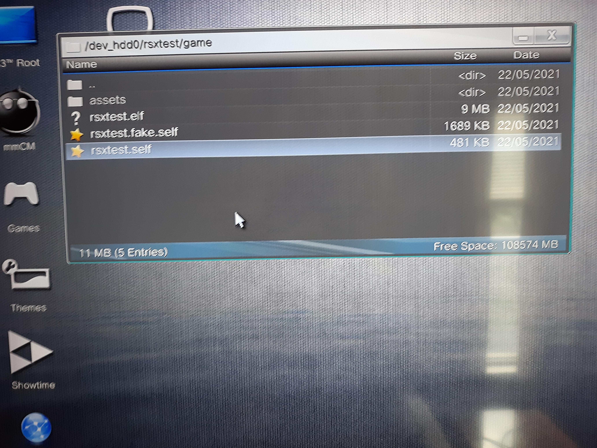05/23/2021
Got an untextured MD2 model working by modifying the MD2 model code from Beginning OpenGL Game Programming.
I first ran into a file endianness issue:
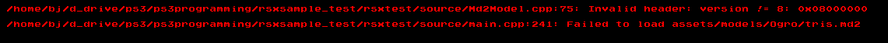The version field of the MD2 header (a 32bit integer) was being read as 0x08000000 instead of 0x00000008. I forgot that the Ps3 Cell CPU is big endian, whereas my x86_64 desktop is little endian. The MD2 file fields are stored as little endian as well. I chose to handle this on the PS3 by converting the read in file fields from little to big endian during load:
Md2Model.h:
// little endian to big endian
inline int32_t lend2bend32( int32_t lend )
{
char* ptr = (char*)&lend;
return (ptr[3] << 24) |
(ptr[2] << 16) |
(ptr[1] << 8) |
(ptr[0]);
}
inline float lend2bend32f( float lend )
{
float res;
char* ptr = (char*)&lend;
char* rPtr = (char*)&res;
rPtr[0] = ptr[3];
rPtr[1] = ptr[2];
rPtr[2] = ptr[1];
rPtr[3] = ptr[0];
return res;
}
inline int16_t lend2bend16( int16_t lend )
{
char* ptr = (char*)&lend;
return (ptr[1] << 8) |
(ptr[0]);
}
Md2Model.cpp:
...
READ_DATA( lend2bend32( header.skinOffset ), skins, lend2bend32( header.numSkins ), Skin);
READ_DATA( lend2bend32( header.texCoordOffset ), md2TexCoords, lend2bend32( header.numTexCoords )
READ_DATA( lend2bend32( header.triangleOffset ), triangles, lend2bend32( header.numTriangles ), T
for ( TexCoord& tc : md2TexCoords )
{
tc.s = lend2bend16( tc.s );
tc.t = lend2bend16( tc.t );
}
for ( Triangle& tr : triangles )
{
tr.vertIndex[0] = lend2bend16( tr.vertIndex[0] );
tr.vertIndex[1] = lend2bend16( tr.vertIndex[1] );
tr.vertIndex[2] = lend2bend16( tr.vertIndex[2] );
tr.texCoordIndex[0] = lend2bend16( tr.texCoordIndex[0] );
tr.texCoordIndex[1] = lend2bend16( tr.texCoordIndex[1] );
tr.texCoordIndex[2] = lend2bend16( tr.texCoordIndex[2] );
}
...
// and similar for other locations with int16_t/int32_t/float
I also had to swap the Vec3 class with Vector3 (from the psl1ght library), and define a basic Vector2 struct:
struct KeyFrame
{
f32 scale[3]; // use to multiply and add Vertex::v
f32 translate[3];
char name[16];
std::vector md2Vertices;
std::vector vertices; // converted result vertices
};
...
struct Vector2
{
f32 u,v;
};
Then I replaced the opengl buffering with rsx memory buffering like in the torus/sphere classes:
genBuffers:
m_meshBuffer->cnt_vertices = interpolatedFrame.vertices.size();
m_meshBuffer->vertices =
(S3DVertex*)rsxMemalign( 128,
m_meshBuffer->cnt_vertices * sizeof(S3DVertex) );
if ( !m_meshBuffer->vertices ) {
DBG_LOG( "Failed to alloc vertices\n" );
return false;
}
m_meshBuffer->indices = nullptr;
if ( texCoords.size() != interpolatedFrame.vertices.size() ) {
DBG_LOG( "Tex coords size != vertices size (%lu, %lu)\n",
texCoords.size(), interpolatedFrame.vertices.size() );
return false;
}
for ( u32 i = 0; i < m_meshBuffer->cnt_vertices; ++i )
{
Vector3& pos = interpolatedFrame.vertices[i];
m_meshBuffer->vertices[i] = S3DVertex( pos.getX(), pos.getY(), pos.getZ(),
0.0f, 1.0f, 0.0f, // TODO - normals
texCoords[i].u, texCoords[i].v );
}
return true;
Update:
...
// Update RSX memory
for ( u32 i = 0; i < m_meshBuffer->cnt_vertices; ++i )
{
Vector3& pos = interpolatedFrame.vertices[i];
m_meshBuffer->vertices[i] = S3DVertex( pos.getX(), pos.getY(), pos.getZ(),
0.0f, 1.0f, 0.0f, // TODO - normals
texCoords[i].u, texCoords[i].v );
}
The md2 model also needs to be drawn with triangle arrays instead of indices. I found rsxDrawVertexArray() in the psl1ght doxygen on the same page as rsxDrawIndexArray() used previously, on the commands.h file reference:
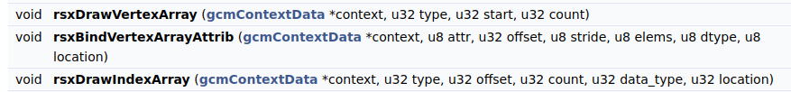Then a slight modification to Entity::Render() to check wether to draw with indices or arrays:
...
if ( m_meshBuffer->indices != nullptr )
{
rsxAddressToOffset( &m_meshBuffer->indices[0], &offset );
rsxDrawIndexArray( m_context,
GCM_TYPE_TRIANGLES, // u32 type
offset, // u32 offset
m_meshBuffer->cnt_indices, // u32 count
GCM_INDEX_TYPE_16B, // u32 data_type
GCM_LOCATION_RSX ); // u32 location
}
else
{
rsxDrawVertexArray( m_context,
GCM_TYPE_TRIANGLES,
0,
m_meshBuffer->cnt_vertices );
}
Finally, in order to update the md2's animation, I added a GameTimer class in main.cpp, based off ppu/include/sys/systime.h sysGetCurrentTime()
class GameTimer
{
public:
GameTimer()
{
GetCurSecNsec( &m_lastSec, &m_lastNsec );
m_FPS = 0.0f;
}
~GameTimer()
{}
void Update()
{
u64 curSec;
u64 curNsec;
GetCurSecNsec( &curSec, &curNsec );
u64 secDiff = curSec - m_lastSec;
u64 nsecDiff = (curNsec < m_lastNsec) ? m_lastNsec - curNsec : curNsec - m_lastNsec;
m_deltaMs = (float( secDiff ) * 1000.0f) +
(float( nsecDiff ) / 1000000.0f);
m_lastSec = curSec;
m_lastNsec = curNsec;
++m_framesCount;
m_fpsTimeCount += m_deltaMs;
if ( m_fpsTimeCount / 1000.0f >= m_fpsDuration )
{
m_FPS = ( m_fpsTimeCount / 1000.0f ) * m_framesCount;
m_framesCount = 0;
m_fpsTimeCount = 0.0f;
}
}
float GetDeltaMS() { return m_deltaMs; }
float GetFPS() { return m_FPS; }
private:
float m_deltaMs; // time passed since last update
float m_FPS;
u64 m_lastSec;
u64 m_lastNsec;
u32 m_framesCount = 0;
float m_fpsTimeCount = 0.0f;
const float m_fpsDuration = 1.0f; // seconds until update fps
inline void GetCurSecNsec( u64* sec, u64* nsec )
{
sysGetCurrentTime( sec, nsec );
}
};
The code in main to then load and draw the md2 model is:
static Md2Model g_Ogro;
...
if ( !g_Ogro.Init( g_Renderer.GetGcmContext() ) ) {
DBG_LOG( "Failed to init md2 model ogro\n" );
return;
}
if ( !g_Ogro.Load( ASSETS_DIR"/models/Ogro/tris.md2" ) ) {
DBG_LOG( "Failed to load assets/models/Ogro/tris.md2\n" );
return;
} else {
DBG_LOG( "Success loading assets/models/Ogro/tris.md2\n" );
}
g_Ogro.SetAnimation( Md2Model::Animation::Idle );
...
g_Timer.Update();
g_Ogro.Update( g_Timer.GetDeltaMS() );
...
modelMatrix = Matrix4::scale( Vector3( 0.25f, 0.25f, 0.25f ) );
modelMatrix.setTranslation(Vector3(3.0f,0.0f,-8.0f));
modelMatrixIT = inverse(modelMatrix);
modelViewMatrix = transpose(viewMatrix*modelMatrix);
objEyePos = modelMatrixIT*eye_pos;
g_Shader.Use();
g_Shader.SetVertexProgParam( "projMatrix", (float*)&g_ProjMatrix );
g_Shader.SetVertexProgParam( "modelViewMatrix", (float*)&modelViewMatrix );
g_Renderer.RenderEntity( g_Ogro );
Which gives us an unproperly textured model:
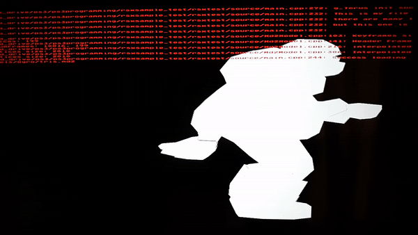As a side note, I found you can added files to the rpcs3 emulator by simply placing files in the appropriate directory in the same folder as the emulator executable:

Next was texture loading. Like the Md2Model class, I copied and modified the Targa Image loading implementation from beginning opengl game programming. Like the .md2 model file, the .tga texture needs to be converted from little to big endian. Luckily, there are only 4 fields in the file header that are larger than 1 byte and hence need to be flipped (xOrigin, yOrigin, width, and height):
struct Header
{
uint8_t idLength;
uint8_t colorMapType;
uint8_t imageTypeCode;
uint8_t colorMapSpec[5];
uint16_t xOrigin;
uint16_t yOrigin;
uint16_t width;
uint16_t height;
uint8_t bpp; // bits per pixel
uint8_t imageDesc;
};
Other than that I didn't really need to modify the Targa code at all, just remove the OpenGL buffer function. To load the texture data for the PS3 GPU, I made the Targa::Image class a child of the Texture class, and added the Texture::Init function to Targa::Image::Load:
namespace Targa
{
...
class Image : public Texture
{
// internally calls Texture::Init()
bool Load( gcmContextData* context, const std::string& fileName );
...
bool Image::Load( gcmContextData* context, const std::string& fileName )
{
...
return Texture::Init( context,
imageData.data(),
width,
height,
bytesPerPixel );
}
Within the Texture class, I had to modify the init function to account for textures with 3 bytes per pixel (no alpha), which defaults to an alpha value of 255 instead:
bool Texture::Init( gcmContextData* context, u8* pixelData, u32 width, u32 height, u32 bytesPerPixel )
{
...
m_buffer = (u32*)rsxMemalign( 128, width * height * 4 ); // force 4 bytes per pixel
...
DBG_ASSERT( bytesPerPixel == 4 || bytesPerPixel == 3 );
u8* buffer = (u8*)m_buffer;
for ( u32 i = 0; i < width * height * 4; i += 4 )
{
buffer[ i + 1 ] = *pixelData++; // r
buffer[ i + 2 ] = *pixelData++; // g
buffer[ i + 3 ] = *pixelData++; // b
if ( bytesPerPixel == 4 ) {
buffer[ i + 0 ] = *pixelData++; // a
} else {
buffer[ i + 0 ] = 255;
}
}
...
Initially the texture wasn't displaying right on the model; it turned out to be a bug where I was converting the Md2 texture coordinates from little to big endian twice; so I was ending up at little endian again. Fixing that we now see a glorious Ogro model:
06/05/2021
Working on getting MD5 Skeletal Animation from Newcastle tutorials on PS3. To start, I replaced the Newcastle Vector3, Vector4, Matrix3, and Matrix4 classes with the PS3 SDK SIMD optimized classes. Additionally, the OpenGL code had to be replaced with the PS3 RSX memory/vertex code. This included adding support for 32-bit indices instead of 16-bit indices, due to the number of vertices required.
DBG_LOG( "Generating RSX buffers\n" );
if ( vertices == nullptr ) {
DBG_LOG( "vertices null!\n" );
return false;
}
m_meshBuffer->cnt_vertices = numVertices;
m_meshBuffer->vertices =
(S3DVertex*)rsxMemalign( 128,
m_meshBuffer->cnt_vertices * sizeof(S3DVertex) );
if ( !m_meshBuffer->vertices ) {
DBG_LOG( "Failed to alloc vertices\n" );
return false;
}
if ( indices )
{
m_meshBuffer->cnt_indices = numIndices;
m_meshBuffer->indices = nullptr;
m_meshBuffer->indices32 =
(u32*)rsxMemalign( 128, m_meshBuffer->cnt_indices * sizeof(u32) );
if ( !m_meshBuffer->indices32 ) {
DBG_LOG( "Failed to alloc indices32\n" );
free( m_meshBuffer->vertices );
return false;
}
}
for ( u32 i = 0; i < m_meshBuffer->cnt_vertices; ++i )
{
Vectormath::Aos::Vector3& pos = vertices[i];
Vector2& texCoord = textureCoords[i];
m_meshBuffer->vertices[i] = S3DVertex( pos.getX(), pos.getY(), pos.getZ(),
0.0f, 1.0f, 0.0f, // TODO - normals
texCoord.u, 1.0f - texCoord.v );
}
DBG_LOG( "mesh buffer num indices: %u\n", m_meshBuffer->cnt_indices );
for ( u32 i = 0; i < m_meshBuffer->cnt_indices; ++i )
{
m_meshBuffer->indices32[i] = indices[i];
}
...
if ( m_meshBuffer->indices != nullptr )
{
rsxAddressToOffset( &m_meshBuffer->indices[0], &offset );
rsxDrawIndexArray( m_context,
GCM_TYPE_TRIANGLES, // u32 type
offset, // u32 offset
m_meshBuffer->cnt_indices, // u32 count
GCM_INDEX_TYPE_16B, // u32 data_type
GCM_LOCATION_RSX ); // u32 location
}
else if ( m_meshBuffer->indices32 != nullptr )
{
rsxAddressToOffset( &m_meshBuffer->indices32[0], &offset );
rsxDrawIndexArray( m_context,
GCM_TYPE_TRIANGLES, // u32 type
offset, // u32 offset
m_meshBuffer->cnt_indices, // u32 count
GCM_INDEX_TYPE_32B, // u32 data_type
GCM_LOCATION_RSX ); // u32 location
}
After those changes, I ended up with an initial bug:
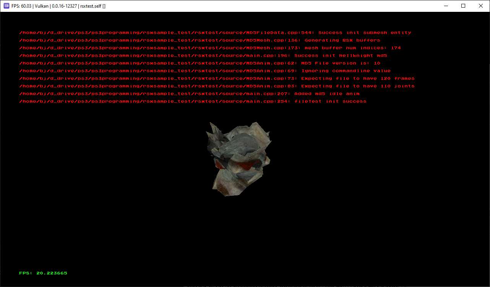Which, after debugging by logging values to text files and comparing between PC version, narrowed down to this code:
Vectormath::Aos::Vector4 res = ((joint.transform * weight.position) * weight.weightValue);
target->vertices[j] += Vectormath::Aos::Vector3( res.getX(), res.getY(), res.getZ() );
weight.position was a Vector3. Because of this, the multiply operator was handling the Matrix4/Vec3 length differently than the newcastle matrix code. Making weight.position a Vector4 instead fixed the issue:
Vectormath::Aos::Vector4 res = (( joint.transform *
Vectormath::Aos::Vector4( weight.position, 1.0f ))
* weight.weightValue );
target->vertices[j] += res.getXYZ();

Another bug:
float oriX, oriY, oriZ;
from >> oriX >> oriY >> oriZ;
baseFrame.orientations[current].setX( oriX ); // bug! should be oriX,oriY,oriZ
baseFrame.orientations[current].setY( oriX );
baseFrame.orientations[current].setZ( oriX );
Better, but the animation is still weird/jerky, and the texture coordinates are still off...
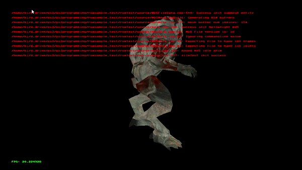Turned out to be an issue with my game timer class
//g_MD5Node->Update( g_Timer.GetDeltaMS() );
g_MD5Node->Update( 16.0f );
Hard coding the passed milliseconds made the animation nice and smooth as expected
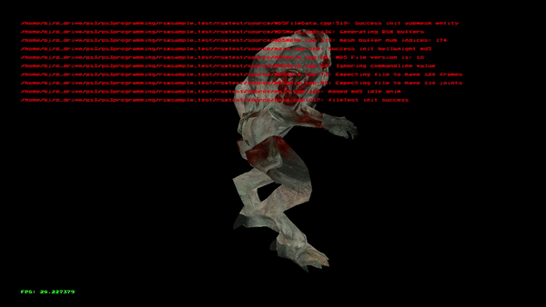Modified the game timer code to combine both seconds and nanoseconds into just nanoseconds:
//u64 secDiff = curSec - m_lastSec;
//u64 nsecDiff = (curNsec < m_lastNsec) ? m_lastNsec - curNsec : curNsec - m_lastNsec;
u64 curNano = (curSec * 1e9) + curNsec;
u64 lastNano = (m_lastSec * 1e9) + m_lastNsec;
//m_deltaMs = (float( secDiff ) * 1000.0f) +
// (float( nsecDiff ) / 1000000.0f);
m_deltaMs = float((curNano - lastNano) / 1000000);
Next, to fix the texture, I had to flip the v coordinate, like is done in the Md2 model class:
for ( u32 i = 0; i < m_meshBuffer->cnt_vertices; ++i )
{
Vectormath::Aos::Vector3& pos = vertices[i];
Vector2& texCoord = textureCoords[i];
m_meshBuffer->vertices[i] = S3DVertex( pos.getX(), pos.getY(), pos.getZ(),
0.0f, 1.0f, 0.0f, // TODO - normals
texCoord.u, 1.0f - texCoord.v ); // flipped v to 1.0f - v
}
And wallah! Fully textured and animated working on the console:
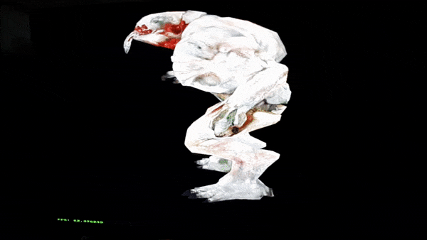I loaded the proper texture outside of the MD5 class; TODO would be to auto load the texture based on the file name within the MD5.
06/06/2021
Working on the heightmap terrain from Begginning Opengl Game Programming. Similar to the MD5 model, I replaced Vector/Matrix classes with the ps3 Vectormath::Aos::Vector3 versions. I also moved the texturing outside of the class (into main for now).
The scale of the terrain compared to the MD5 model is quite different; I'll have to either scale down the MD5 model or scale up the terrain.
I initially had a texturing issue:
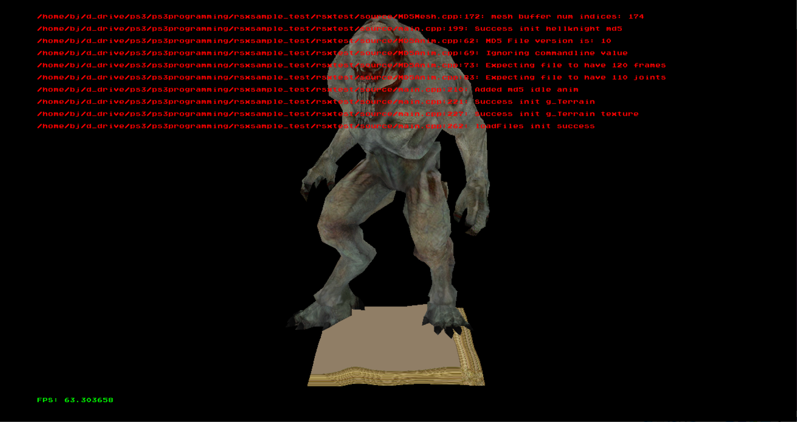Which viewing the zoomed out version, showed the texture was not repeating over each terrain section. Looking at the texture class code properties, I saw the texture was configured to clamp instead of wrap, which matches viewing the zoomed out terrain.
Looking at the PSL1GHT doxygen, we can see the different texture options:
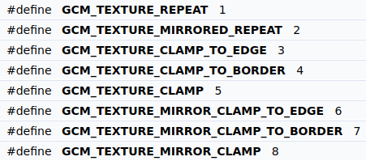I chose GCM_TEXTURE_REPEAT to use instead of GCM_TEXTURE_CLAMP:
//rsxTextureWrapMode(m_context,shaderTexUnit,GCM_TEXTURE_CLAMP_TO_EDGE,GCM_TEXTURE_CLAMP_TO_EDGE,GCM_TEXTURE_CLAMP_TO_EDGE,0,GCM_TEXTURE_ZFUNC_LESS,0);
rsxTextureWrapMode(m_context,shaderTexUnit,GCM_TEXTURE_REPEAT,GCM_TEXTURE_REPEAT,GCM_TEXTURE_REPEAT,0,GCM_TEXTURE_ZFUNC_LESS,0);
Scaling the terrain by a factor of 20 we can now see the ground in relation to the MD5 model:
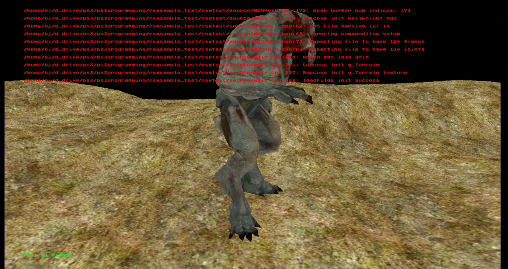However, when I tried running it on my PS3 it didn't turn out so well:

I guessed it had to do with the massive scaling and size difference between the terrain and MD5 model. After adding a scale option to the MD5 loading code and scaling it down to 1/20th its original size, and then adjusting the camera, running on PS3 hardware worked again:

06/07/2021
Got transparent texture for the tree object from beg. opengl game prog. working. I made a static S3DVertex class member pointer, that way all Tree instances can share the same vertex memory. I also changed the vertex/texture coordinate buffers to use triangles instead of triangle strips, just because I was lazy and didn't want to figure out how to do that on the ps3 (I think an additional 2 triangles won't kill us!).
// static buffer instance
S3DVertex* Tree::s_vertices = nullptr;
...
static const size_t numVertices = 12;
m_meshBuffer->cnt_vertices = numVertices;
if ( s_vertices == nullptr )
{
float vertices[numVertices*3] =
{
// first square
-1.0f, 0.0f, 0.0f, // bottom left
1.0f, 0.0f, 0.0f, // bottom right
-1.0f, 2.0f, 0.0f, // top left
1.0f, 0.0f, 0.0f, // bottom right
1.0f, 2.0f, 0.0f, // top right
-1.0f, 2.0f, 0.0f, // top left
// second square
0.0f, 0.0f, 1.0f, // bottom left
0.0f, 0.0f, -1.0f, // bottom right
0.0f, 2.0f, 1.0f, // top left
0.0f, 0.0f, -1.0f, // bottom right
0.0f, 2.0f, -1.0f, // top right
0.0f, 2.0f, 1.0f // top left
};
float texCoords[numVertices*2] =
{
// first square
0.0f, 0.0f, // bottom left
1.0f, 0.0f, // bottom right
0.0f, 1.0f, // top left
1.0f, 0.0f, // bottom right
1.0f, 1.0f, // top right
0.0f, 1.0f, // top left
// second square
0.0f, 0.0f, // bottom left
1.0f, 0.0f, // bottom right
0.0f, 1.0f, // top left
1.0f, 0.0f, // bottom right
1.0f, 1.0f, // top right
0.0f, 1.0f, // top left
};
s_vertices = (S3DVertex*)rsxMemalign( 128,
m_meshBuffer->cnt_vertices * sizeof(S3DVertex) );
for ( size_t i = 0; i < numVertices; ++i )
{
float* vertex = &vertices[i*3];
float* texCoord = &texCoords[i*2];
s_vertices[i] = S3DVertex( vertex[0], vertex[1], vertex[2],
0.0f, 1.0f, 0.0f, // TODO - normals
texCoord[0], texCoord[1] );
}
}
m_meshBuffer->vertices = s_vertices;
m_meshBuffer->cnt_indices = 0;
m_meshBuffer->indices = nullptr;
m_meshBuffer->indices32 = nullptr;
Next, I updated fragment shader to allow alpha values:
//float3 color = tex2D(texture, texcoord).xyz; // old
float4 color = tex2D(texture, texcoord); // new
//oColor = float4(color,1.0f); // old
oColor = color; // new
Yet the tree texture was showing black where it should be transparent:
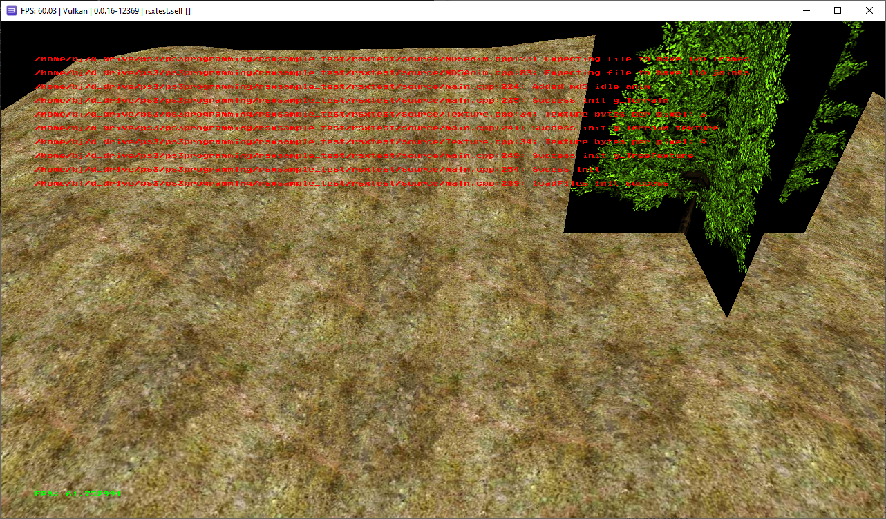Hard coding red and green values in the shader showed that indeed worked:
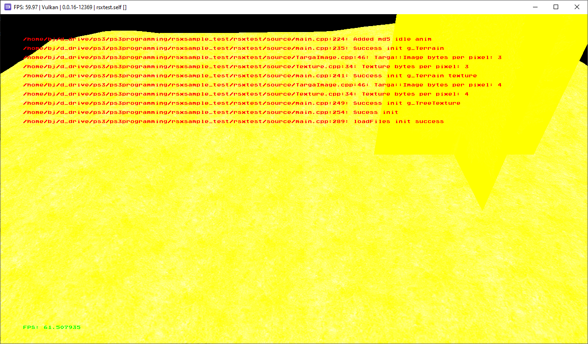After some poking around in the psl1ght doxygen, I found shader blending was disabled by default. I added the following calls to Renderer::SetDrawEnv(). I was surprised rsxSetBlendFunc() needed to be called explicitly as well, I assumed some default would have worked instead.
rsxSetBlendEnable( context, GCM_TRUE ); // enable blending
rsxSetBlendEquation( context, GCM_FUNC_ADD, GCM_FUNC_ADD ); // default blend equation...
rsxSetBlendFunc( context, GCM_SRC_ALPHA, // sfcolor (source)
GCM_ONE_MINUS_SRC_ALPHA, // dfcolor (destination)
GCM_SRC_ALPHA, // sfalpha
GCM_ONE_MINUS_SRC_ALPHA ); // dfalpha
Which is called every Renderer::BeginFrame(). Now we have a transparent texture for the tree as expected:
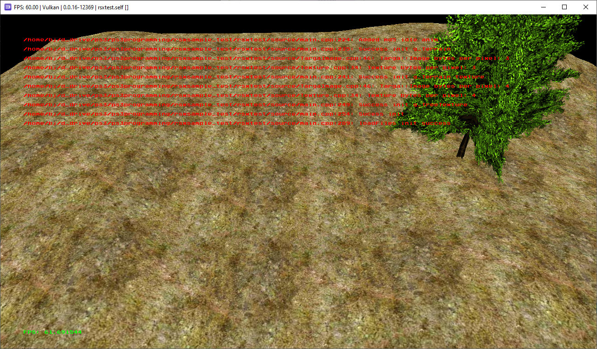